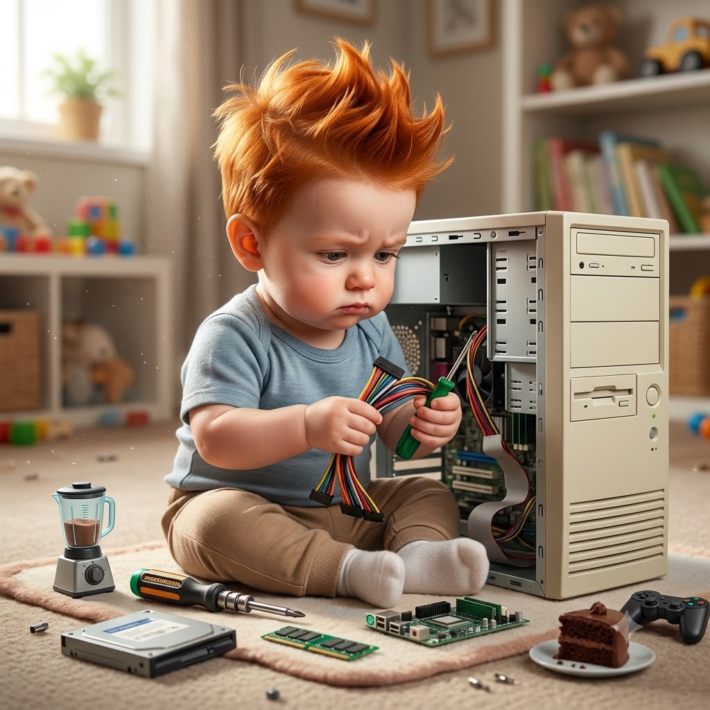
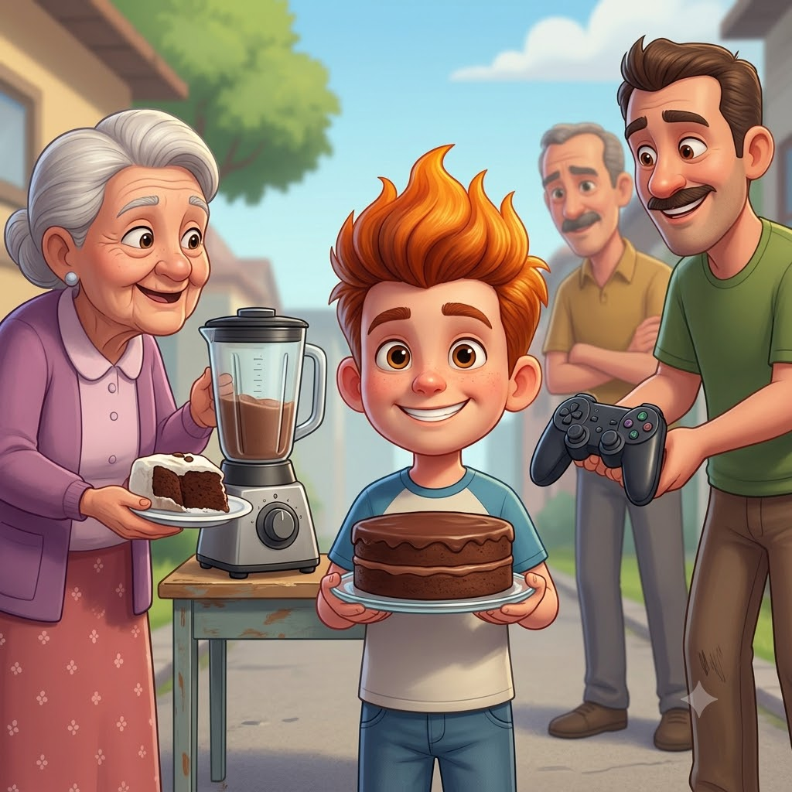
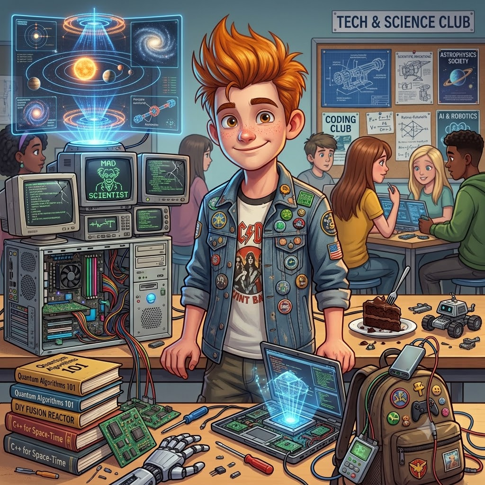
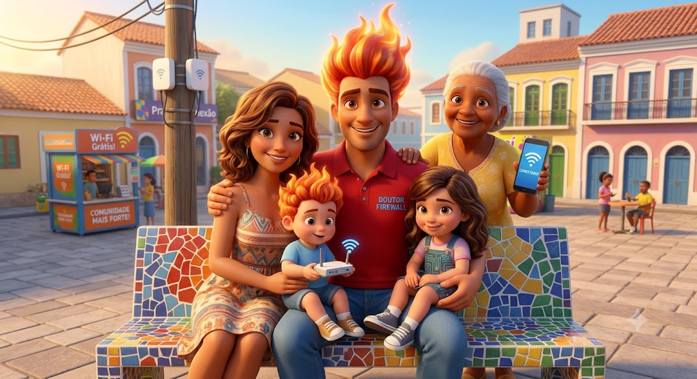
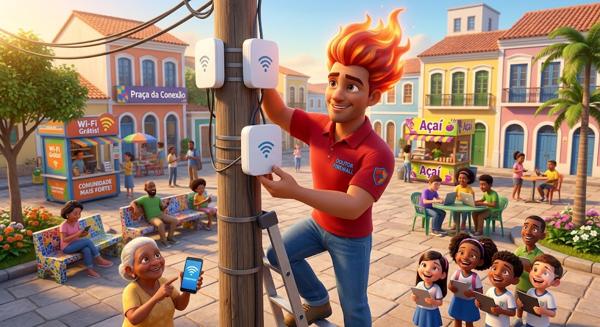

Álbum de fotos
Alguns momentos da trajetória do candidato 26, registrados (e provavelmente com backup em nuvem).





Alguns momentos da trajetória do candidato 26, registrados (e provavelmente com backup em nuvem).




